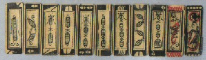
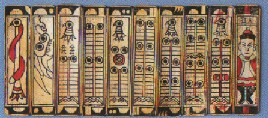
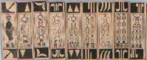
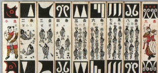

麻雀の前身である中国カード、馬弔（マーチャオ）の古いタイプのものを見るとよく分かるが、もともと索子は穴あき銭の真ん中に紐を通して束ねた図柄であった。とうぜん１索も穴あき銭一束の図柄(現在でも馬弔系の紙札では、索子は穴あき銭一束の図柄)。
麻雀博物館篇「麻雀大図録より」

しかしすべての数牌の図柄はやがてデフォルメされ、索子は中支（上海近辺）では鳥の場合は現在の索子の１本１本の上部に鳥の頭をくっつけ、下部には尾羽根をくっつけたようにデフォルメされていった（胴体は現在の索子本体とよく似ていた）。
麻雀博物館篇「麻雀大図録より」

※鳥の目玉は、銭でもある。
どうして中支方面では鳥の図柄に変化して云ったかという点については判然としないが、一つには鳥になる前のデフォルメである青扶(チンフー＝お金を表すイモ虫）のデザインが、多少はヒヨコに似ていたこと。また中支地方面では鳥がキャラクターイメージであったことも原因ではないかと推測されている。
これを裏付けるように、北京（北支）で刊行された中国古書には、「上海、蘇州あたりの人は、なぜか鳥を好む」という記述がある。ではそんな事を云う北支の人は何を好んだかというと、それは魚であった。北支（北京方面）では上に出ている紐を魚の頭、真ん中を胴体、下の紐を尾鰭にして魚に変化していった。そこで麻雀のルーツの一つである馬弔では、１索にはでっかい魚が一匹デザインされていた。
麻雀博物館篇「麻雀大図録より」

そしてさらに北支系統の馬吊では、全体が魚デザインに変化していった。
麻雀博物館篇「麻雀大図録より」

いずれにせよそんな点から北支(北京地方)では魚に、中支地方(上海近辺）では鳥に変化した。そん特徴的なデザインからの連想と、馬弔(マーチャオ)と麻雀(マーチャオ＝中国では普通の雀(すずめ)の意味)の発音が似ているので、紙札ゲームの名称も麻雀に変化したのではないかと推測されている。
1850年、太平天国の乱という内乱がおき、15年間続いた。この反乱軍が拠点にしたのは中支の南京であるが、この地方で紙札牌である麻雀と天九牌系統の骨牌(クーパイ)が融合し、現在の骨牌式麻雀が誕生したというのが現在の有力な説である。
この骨牌化した麻雀で、一索だけが青[虫夫](チンフー）から鳥に変身し、他の索子はその関連で竹、または笹の葉デザインに変化していった。
そしてこの骨牌式麻雀は中支地方で誕生したので、索子のデザインは、当時、中支（上海近辺）地方で採用されていた鳥デザインが主流となり、魚デザインは駆逐されていったようである。そして現在に至っている。
この鳥も最初は単純に雀（すずめ）デザインであったが、もとをただせば立派な銭束。そこでこの雀（すずめ）にお金が一杯入った銭籠を背負わした図柄も登場した。しかしただ銭籠を背負わしただけでは味も素っ気もない。そこでこの銭籠を正月の門松のように、松や梅などの植物で飾り立てた。また籠には銭が一杯という事を表すために、鳥のしっぽ側に銭がバラバラとこぼれ落ちている図柄も登場した。
ここまでくると、門松で飾り立てられた銭籠、あるいはバラバラとこぼれ落ちた銭は、まるで孔雀の羽根にみえてくる。もちろん孔雀や鳳凰は雀よりずっとカッコいい.....というのでいつの間にか、雀が孔雀・鳳凰に変化した。つまり孔雀の尾羽根にある丸い紋様は、もともと「穴あき銭」だったのである。
というわけで現在の一索はほとんど孔雀タイプであるが、それとは知らず近年も鳥が銭籠を背負うという型をとどめて製造されている牌が存在する。
一度、手元の一索を確認してみてほしい。きっと鳥が籠を背負っているようなデザインの牌があると思ふ。もちろんその籠部分に描かれている丸い紋様は、穴あき銭を表している。
しかしここで疑問が湧く。紙札牌が最初に竹骨化されたのは中支において、というのはいいとして、北支ではいっさい竹骨牌は製造されなかったのであろうか？。製造されたとしたら、その１索には魚がデザインされていたかもしれない。誰か中国へ行く機会がある人、こんな牌見つけたら歴史的大発見である。※北京地方の骨董屋が狙い目か？
|